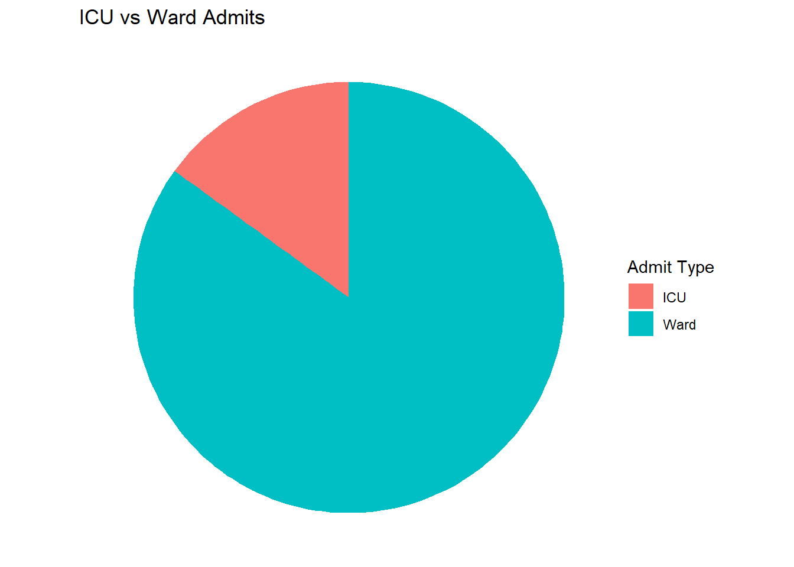
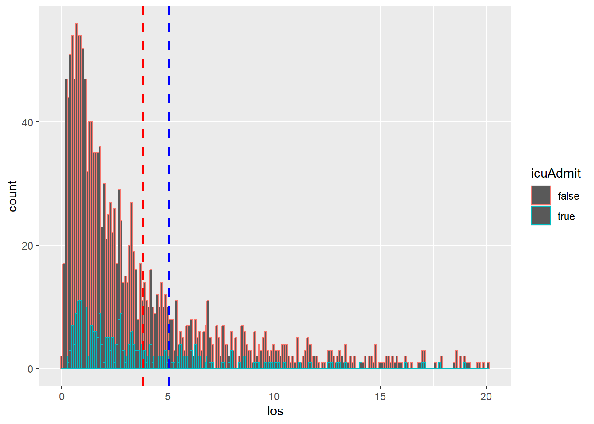
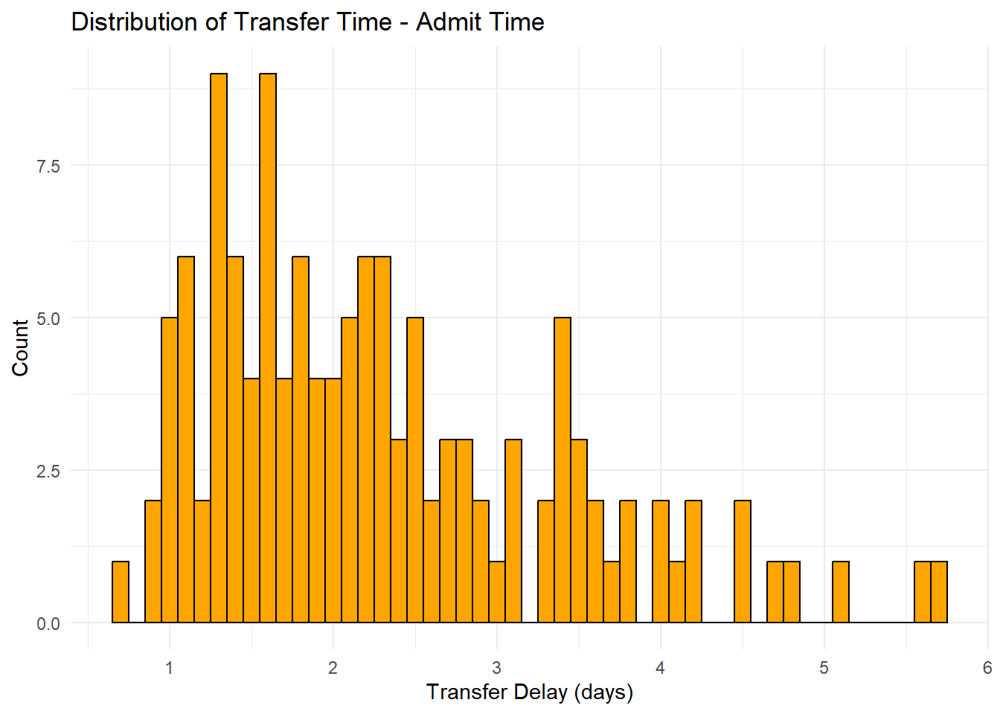
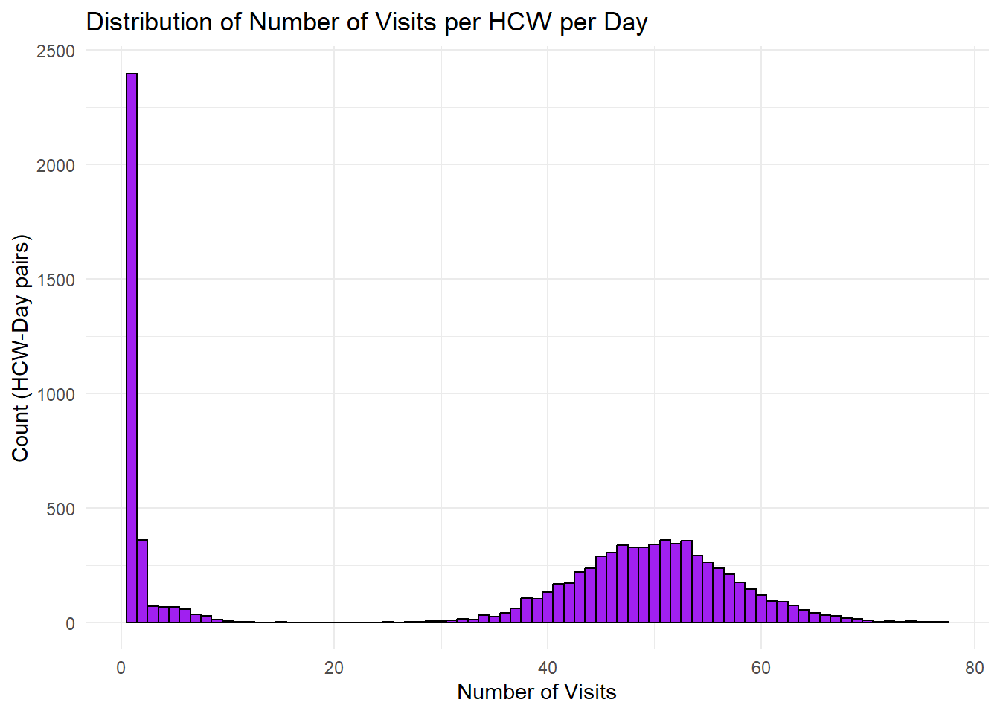

library(ggplot2)
# Read discharged_patients.txt into a dataframe
df <- read.table("discharged_patients.txt", header = TRUE, sep = ",", stringsAsFactors = FALSE)
total_rows <- nrow(df)
total_icu_admit <- sum(tolower(df$icuAdmit) == 'true')
total_ward_admit <- total_rows - total_icu_admit
df$los <- df$dischargeTime - df$admitTimeADT Report
Total Patients: 1829
ICU admit %: 0.1509021
Icu-vs-Ward-Admits
# Pie chart of ICU vs Ward admits
admit_counts <- data.frame(
type = c("ICU", "Ward"),
count = c(total_icu_admit, total_ward_admit)
)
ggplot(admit_counts, aes(x = "", y = count, fill = type)) +
geom_bar(stat = "identity", width = 1) +
coord_polar(theta = "y") +
labs(title = "ICU vs Ward Admits", x = NULL, y = NULL, fill = "Admit Type") +
theme_void()
LOS
icu_patients <- df[tolower(df$icuAdmit) == "true", ]
ward_patients <- df[tolower(df$icuAdmit) == "false", ]
q3 <- quantile(df$los, 0.75, na.rm = TRUE)
ggplot(df, aes(x = los, color = icuAdmit)) +
geom_histogram(binwidth = 0.1) +
xlim(NA, q3*4) +
geom_vline(aes(xintercept=mean(icu_patients$los)),
color="red", linetype="dashed", size=1) +
geom_vline(aes(xintercept=mean(ward_patients$los)),
color="blue", linetype="dashed", size=1)
summary(icu_patients$los) Min. 1st Qu. Median Mean 3rd Qu. Max.
0.3629 1.2131 2.1605 3.5607 4.3038 33.8704 summary(ward_patients$los) Min. 1st Qu. Median Mean 3rd Qu. Max.
0.02787 0.93577 1.96473 4.55582 4.95492 92.46698 total_ward_discharge <- sum(tolower(df$dischargeLocation) == 'ward')
total_icu_discharge <- sum(tolower(df$dischargeLocation) == 'icu')
total_transfers_ward <- sum(df$transferTime != -1 & tolower(df$admitLocation) == 'icu')
total_transfers_icu <- sum(df$transferTime != -1 & tolower(df$admitLocation) == 'ward')ADT Summary Stats
| key | value |
|---|---|
| Total Admissions | 1829 |
| Total to Ward | 1553 |
| Total to ICU | 276 |
| % icu/total | 0.1509021 |
| total discharges from ward | 1681 |
| total dicharges from icu | 148 |
| total transfers to ward | 128 |
| total transfers to icu | 0 |
| fraction of admissions with transfer to WARD | 0.0699836 |
| fraction of admissions with transfer to ICU | 0 |
| Average LOS | 4.4056553 |
| average LOS for ICU-admits | 3.5606909 |
| average length of stay on ICU (transfer or otherwise) | tbd |
Transfer Time Percentage
# Calculate percentage of patients with non-negative transferTime
num_transfers <- sum(df$transferTime >= 0)
percent_transfers <- 100 * num_transfers / nrow(df)
percent_transfers[1] 6.99836Percentage of patients with a non-negative transfer time: 6.9983598%
Transfer Time Minus Admit Time
# Create new column for transferTime - admitTime
df$transfer_delay <- df$transferTime - df$admitTime
# Histogram of transfer_delay (only for non-negative transfer times)
ggplot(df[df$transferTime >= 0, ], aes(x = transfer_delay)) +
geom_histogram(binwidth = 0.1, fill = "orange", color = "black") +
labs(title = "Distribution of Transfer Time - Admit Time", x = "Transfer Delay (days)", y = "Count") +
theme_minimal()
library(dplyr)
df2 <- read.table("visit_data.txt", header = TRUE, sep = ",", stringsAsFactors = FALSE)
df2$visitDay <- floor(df2$visitTime)
# Histogram: for each hcwId, each day, distribution of number of visits
library(dplyr)
visits_per_day <- df2 %>% group_by(hcwId, visitDay) %>% summarise(n_visits = n())
ggplot(visits_per_day, aes(x = n_visits)) +
geom_histogram(binwidth = 1, fill = "purple", color = "black") +
labs(title = "Distribution of Number of Visits per HCW per Day", x = "Number of Visits", y = "Count (HCW-Day pairs)") +
theme_minimal()
nvisits <- nrow(df2)
# Filter for nurse visits
df_nurse_visits <- df2[df2$hcwType == 'NURSE', ]
df_nurses <- distinct(df_nurse_visits, hcwType, hcwId)
nurse_count <- nrow(df_nurses)
# Filter for other HCW types
df_doctor_visits <- df2[df2$hcwType == 'DOCTOR', ]
df_doctors <- distinct(df_doctor_visits, hcwType, hcwId)
doctor_count <- nrow(df_doctors)
df_pt_visits <- df2[df2$hcwType == 'PT', ]
df_pts <- distinct(df_pt_visits, hcwType, hcwId)
pt_count <- nrow(df_pts)
df_ot_visits <- df2[df2$hcwType == 'OT', ]
df_ots <- distinct(df_ot_visits, hcwType, hcwId)
ot_count <- nrow(df_ots)
df_rt_visits <- df2[df2$hcwType == 'RT', ]
df_rts <- distinct(df_rt_visits, hcwType, hcwId)
rt_count <- nrow(df_rts)Total patient visits by hcw type
| HCW Type | Total visits (365d) | mean/day |
|---|---|---|
| NURSE (26) | 357 | 0.0376185 |
| DOCTOR (18) | 312606 | 47.5808219 |
| OT (9) | 765 | 0.2328767 |
| PT (9) | 1019 | 0.3101979 |
| RT (9) | 978 | 0.2977169 |
Average daily visits per patient per hcw per shift
Important
Future Analysis to be completed:
- average daily visits per patient per hcw per shift
- total and broken out by hcw type
- average distinct patients visited per shift
- broken out by hcw type
- average time between visits per HCW by type
- verify (intravisit time + duration of visit from Granular Model)
- doctors mean = gamma(0.52, 90.7) + gamma(5.5, 1.2)
- nurses mean = gamma(0.54, 55.7) + gamma(5.5, 1.2)
- therapists mean = gamma(0.52, 61.7) + gamma(3.0, 1.8)
- verify (intravisit time + duration of visit from Granular Model)
- average number of HCW visits per day/patient (total/{type}) val
- average time between visist by HCW per patient
- average distinct hcw visits per day by patient
Disease
- TBD
punchlist
- Fix the gamma() + gamma() hcw visit intra-event times
- Fix the HCW assignment procedure for nurse and doctor